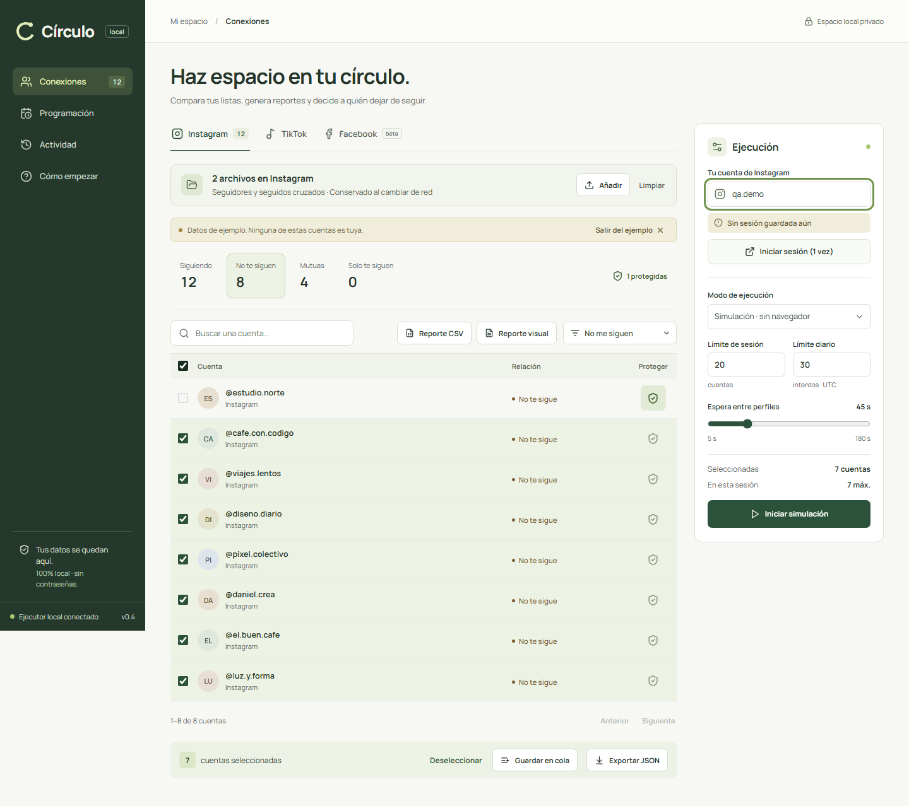

Descarga tu archivo oficial
Pides tu respaldo en formato JSON desde Instagram, TikTok o Facebook. Círculo incluye una guía paso a paso para descargar solo seguidores y seguidos en pocos minutos.
Gratis para Windows · v0.4.0
Cruza tu exportación oficial de Instagram, TikTok o Facebook directamente en tu navegador, protege tus cuentas clave y genera reportes claros. Si quieres, la app de Windows prepara y ejecuta la limpieza desde tu propia sesión, con límites y pausas. Sin nube y sin suscripciones.

Flujo sin fricción
Pides tu respaldo en formato JSON desde Instagram, TikTok o Facebook. Círculo incluye una guía paso a paso para descargar solo seguidores y seguidos en pocos minutos.
Tu navegador lee en memoria únicamente las listas necesarias. Al instante ves quién no te sigue, conexiones mutuas y quién solo te sigue a ti, sin subir un solo byte a internet.
Activa el escudo sobre cuentas intocables, descarga reportes CSV/HTML o lleva tu selección al ejecutor local de Windows con límites diarios y pausas. Lee las recomendaciones.
Opciones transparentes
Gratis · app + analizador web
$9 USD · reserva
Desde $25 USD · por cuenta o paquete
Ingeniería y control
El servidor local escucha únicamente en 127.0.0.1, valida origen y token por sesión y nunca
envía tus listas ni cookies a servidores de terceros.
Antes de procesar un lote, comprueba que el usuario autenticado en tu navegador coincide exactamente con el perfil configurado.
Si la plataforma muestra un captcha, inicio de sesión, redirección inesperada o aviso de límite, Círculo detiene todo al instante. Nunca fuerza acciones.
Canal oficial de comprobación por HTTPS con validación de integridad SHA-256 para mantener adaptadores al día sin telemetría oculta.
Lista de lanzamiento
La app ya es gratis. Deja tu correo para asegurar Círculo Pro a $9 USD (soporte y actualizaciones prioritarias) cuando lo habilitemos, o cuéntanos si prefieres que hagamos la auditoría por ti.
¿Quieres revisar el código fuente y las pruebas antes de instalar? Está abierto en GitHub · circulo-app .